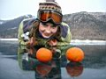
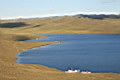
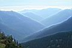
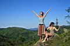
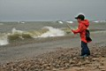
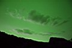
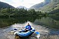
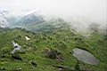
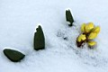
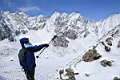

Новостя : Доскеры : Бродяги : Фотосы : Поприколу : Пиши сюда ! :
|
Don`t worry,
Be Happy ! Новостя : Доскеры : Бродяги : Фотосы : Поприколу : Пиши сюда ! : |
|
БРОДЯГИ-2008: |
Рекомендую посмотреть: Рекомендую прочитать: ЗАЯАБАРИ САТ-ОК. ЗЕМЛЯ СОЛЕНЫХ СКАЛ
|
 21-23 февраля 2009. Айс? Еще какой!!!или Как мы с тётками 23 февраля отмечали. Ольга Михалёва пишет о походе по льду Байкала на коньках, от Большого Голоустного до Листвянки за три дня. |
|
 Сентябрь, октябрь, ноябрь
Сентябрь, октябрь, ноябрь"Наша Маша" Ремонт-2008 и строительный бум Про ремонт нашего зимовья и заметки о соседних новостройках... |
|
 21 - 24 августа. Ольхон ... и этим все сказано...Много фото и комментариев, три страницы, смотрите сами :) |
|
 16 - 17 августа. За черникой на МамайХодили я и мои двоюродные сестра и брат - Юля и Саша Савинские. |
|
|
 |
|
 26-28 июля 2008. Алексей и Алексеевич.Семейный выезд на берег Байкала в районе Посольска. Шторм, фестиваль "Байкальская Волна" и кайтеры... |
|
 22-24 июля 2008. Друзья Ветров.Одинокое Перо и Веселая Пальма хотели сегодня уйти за Тающую Гору, но на тропе их задержали Небесные Грибы. Грибы сказали, что их надо собрать и насушить на зиму... |
|
 17-20 июля 2008. Уюга и Хадарта.
17-20 июля 2008. Уюга и Хадарта....но зато Лёха сможет завтра привезти с Ольхона серф, и еще он знает отличное место, которое просто создано для того, чтобы там катались такие начинающие серферы, как мы :)... |
|
 8-12 июля 2008. Соболиное озеро. Водопады.Ходили с рюкзаками и плавали на лодке - Саша, Оксана и я :) |
|
 5 июля 2008. Озёра Южного цирка.Каждый маленький цирк - как затерянный мирок в окружении гор. Горы-стены, небо-крыша. А в этом маленьком мирке - калейдоскоп всего: деревья, трава, цветы, ручьи, озёра, запруды, скалы, каменные россыпи, ямы, холмы. |
|
 23 - 27 июня 2008. Экседиция на пик Байкал.
23 - 27 июня 2008. Экседиция на пик Байкал.Мастер-класс от президента федерации Байкальский Экстрим. Баргузинские Альпы. |
|
 11-12 июня 2008. Цветы и Снег.Какие-то тётеньки в возрасте всё у нас спрашивали, как там кашкара? цветёт? Ага, под снегом! Ждите, скоро оттает, ничего с ней не случится, она же местная :) |
|
 31 мая - 1 июня 2008. Мамай.
31 мая - 1 июня 2008. Мамай.По следам босоногого старика ... вроде идешь рядом, проваливаешься изредка, шатаешься и петляешь, а его следы тянутся ровной аккуратной цепочкой... |
|
|  19-20 апреля 2008. Мунку-Сардык. Перевал 1СМаленькое приключение в снежных горах... |
|